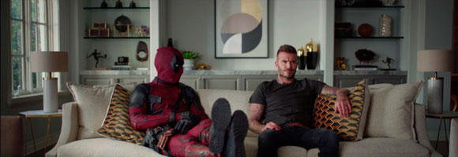

Deadpool le pide perdon a Beckham
Deadpool 2, la secuela sobre el Mercenario Bocazas de Marvel protagonizada por Ryan Reynolds, llega a las salas de cine el 18 de mayo y, para ir bien preparado de cara al estreno de la nueva entrega, el antihéroe ha pedido perdón a una de las personas sobre las que bromea en la primera película: David Beckham. Eso sí... al más puro estilo Wade Wilson.
20th Crentury Fox ha compartido un vídeo que muestra al ex futbolista viendo Deadpool en su casa, pero cuando el chiste que le menciona a él aparece en pantalla, Wade Wilson le pide perdón a través de unos mensajes de texto. Al no recibir respuesta, el Mercenario Bocazas llama a su casa. Tras unos intentos fallidos, finalmente se gana el perdón de Beckham con un regalo que el actor de Rey Arturo: La leyenda de Excalibur no puede rechazar.
No obstante, habrá cierta confusión con respecto a la razón por la que Wade Wilson pide perdón. Mientras que el antihéroe lo hace por la broma de la primera entrega de Deadpool, el ex futbolista creía que lo hacía por algunas de las películas de la filmografía de Reynolds. "¿Por qué creías que estaba pidiendo perdón?", pregunta el Mercenario Bocazas. "Bueno, hay una larga lista", responde Beckham. "Linterna Verde, R.I.P.D. Departamento de Policía Mortal, Eternal, Blade Trinity, Big Monster Campus", recita el ex futbolista. "¡Big Monster Campus es una obra maestra!", se enfada Wade Wilson.
Deadpool 2, dirigida por David Leitch, cuenta en su reparto con los nuevos fichajes de Josh Brolin (Cable), Julian Dennison (Russell) y Zazie Beetz (Domino). También con los regresos de T.J. Miller (Weasel), Morena Baccarin (Vanessa) y Brianna Hildebrand (Negasonic Teenage Warbhead).